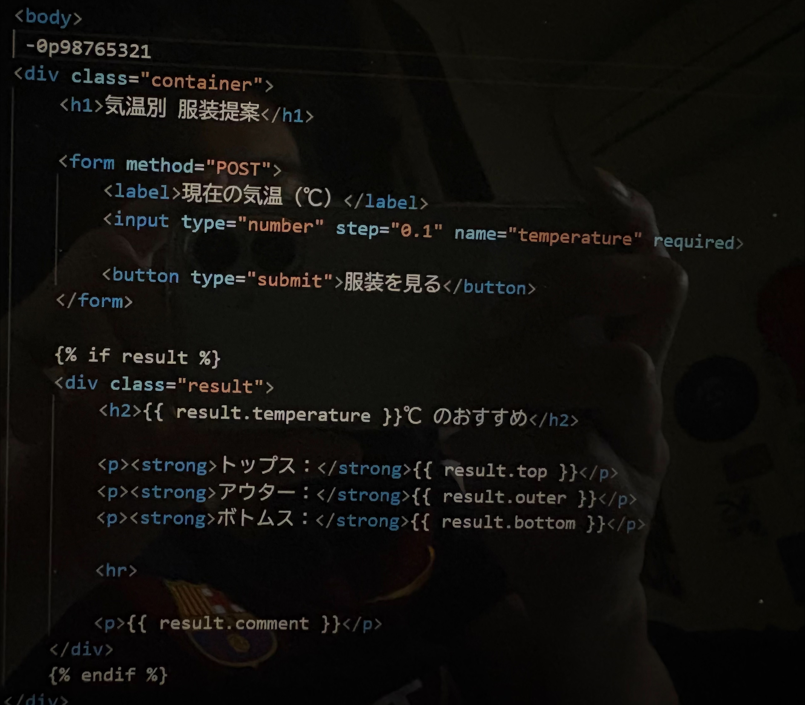
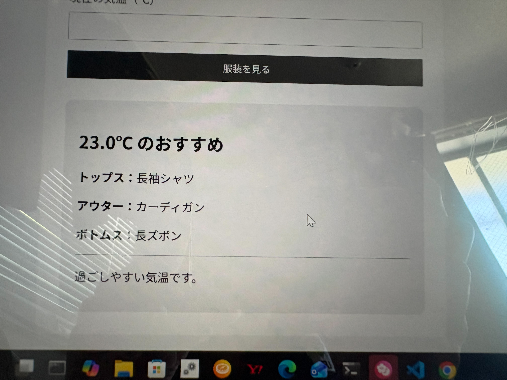

BizTech Portalとは、ビジネスとテクノロジーを組み合わせた学習を行うための環境であり、 実際にアプリケーションを作成しながらプログラミングやデータ活用を学ぶことができる。 特にPythonやFlaskなどを用いて、実用的なWebアプリを作る経験ができる点が特徴である。
気温別の服装を提案してくれるアプリを作成した。 利用者が分かりやすいようにトップス、アウター、ボトムスの 3種類を表示し、その気温がどのような体感なのかも表示するようにした。
ここにコードのスクリーンショットを貼る。


作成したアプリの動画を掲載。
今回初めてBizTech Portalを扱い、こんなにも簡単にアプリを開発できるのかと関心しました。 したいことを打ち込めばすぐ形になるという点は、今までの経験上、 プログラムは難しいものという印象があったため、とても驚きました。 また、分かりやすく開発を進めることができたため、 プログラムに対する苦手意識も少なくなりました。 実際にアプリが完成し、自分で動かしてみた時には達成感もあり、 改めてプログラムの楽しさを実感しました。